https://www.youtube.com/watch?v=H9yS5CHPCtY
VIDEO
https://www.youtube.com/watch?v=iCLnz5oUIpU
VIDEO
SRP Option: https://assetstore.unity.com/packages/essentials/starter-assets-firstperson-updates-in-new-charactercontroller-pa-196525
In Hierarchy with playground, select each object with pink material and select Standard for Shader
URP Option: https://assetstore.unity.com/packages/essentials/starter-assets-character-controllers-urp-267961
Overview of Unity Character Controllers: https://www.youtube.com/watch?v=e94KggaEAr4
Import Starter Assets SRP or URP FPC - from tools panel or asset store link above
This will require you to login to Unity
It will also put the package in My Assets in package manager window
Open in Unity - Download - Import
This imports cinemachine
This imports new unity input system
Accept restart on window prompt
You will have to import FPC package again from website after restart
Starter assets should be in Assets folder now
New Unity input system knocks out Unity UI for FPC, so both should be selected
Edit/Project settings/Player settings/Input system/Active Input Handling - drop down menu - make sure both is selected
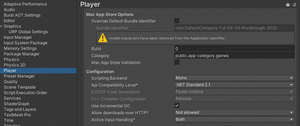
https://gyazo.com/8b2bb784d1b0fd4f5dcb062345354a6c
g. Your packages in Project window should look like this:
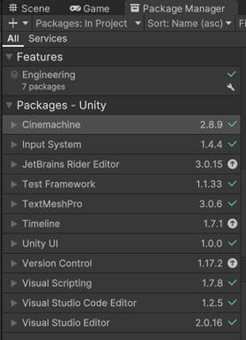
Import FPC Sample Scene - Playground - Double click to load
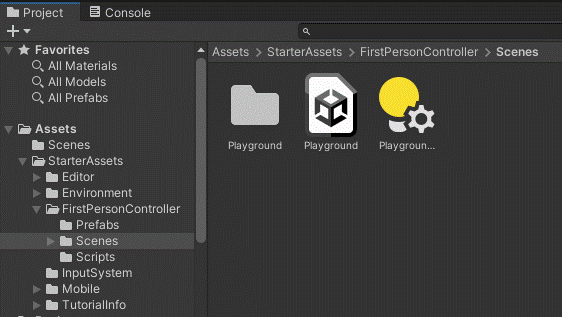
https://gyazo.com/1c0595dff29ea50531454bc520b90449
This has the joysticks needed for control
Tick in top right in inspector to activate UI SA Inputs in Hierarchy (greyed out)
URP - called “UI Touchscreen Input”
SRP - called “UI_Canvas_StarterAssetsInputs_Joysticks”
This needs some adjustment to work
If you drag in the scene to hierarchy in the video, you have 2 scenes in the hierarchy and it may crash Unity
Playground scene should just be double clicked to load up, then you can drag in Mia/Animator after
The Playground Scene will be Pink - This is a URP mismatch
Change Scriptable Render Pipeline Settings from None to a Universal Render Pipeline (URP) setting
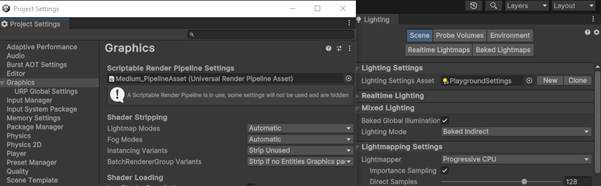
Drag Playground settings to a lighting panel (Window/Rendering/Lighting if needed)
Select All Materials in Project Window/Favorites at top
Select all pink materials
Edit/Rendering/Materials/Convert to URP
This will not work for some, so select these in hierarchy and set Shader to Standard to fix
Mia can be exported/imported as a package
She will turn up Pink; fix Mia body/face materials in All Materials
You can also download and Import the MiaTut04StartURP.unitypackage
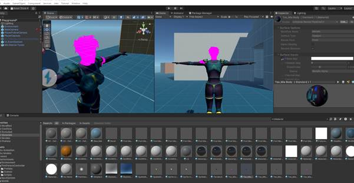
3. Activate UI Canvas StarterAssetsInputs Joysticks by ticking box in inspector
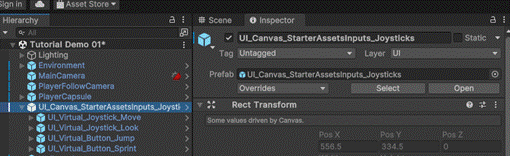
https://gyazo.com/ef43ac81bf9565a53a3aa46fe069aafc
Do The following to Use Unity UI interaction:
Player capsule - mouse cursor settings in Starter Assets Inputs:
Cursor locked - untick Cursor input for look - untick 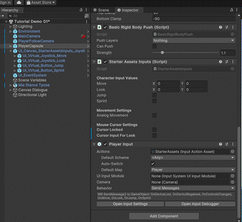
https://gyazo.com/ff0fb2548e8f2ea53775b4ed8c48a3f3
UI Event System (Unity Bug!) pointer behavior note Note: Single Unified Pointer may work now (2022)
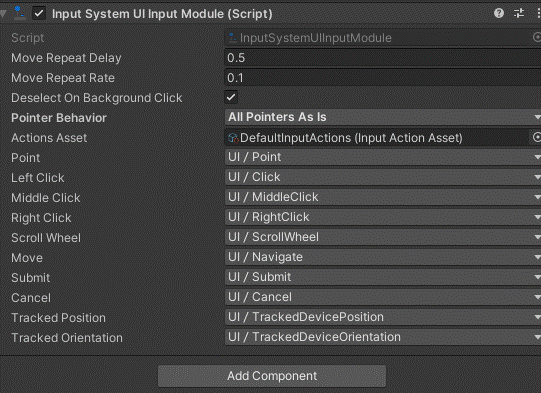
The UI_Virtual_Joystick_Look may be too powerful at 60 and 30. Change the settings to 1 and 0.5 in Inspector as below.
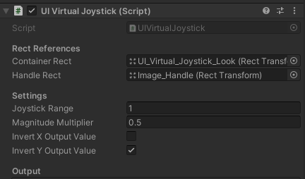
https://gyazo.com/feaecc836b2c9ff7a99fb41442bb9246
Can now use WASD, onscreen mouselook and joystick, and UI buttons NOTE: if doing C# code - add namespace: using UnityEngine.UI; 4. Overview
Canvas sends out event
Parent canvas is listening with script
Sends out to player capsule/starter assets script
Event System needs input Options
Cameras need correct raycasters - Add Physics Raycaster to Main Camera and select mixed or everything
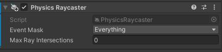
5. Basic Clicks on Scene Objects: Player Character
Add Capsule Collider Component to Mia Stance TPoseDoes not need to be trigger Add Component/Visual Scripting/Script Machine to Mia Stance TPose Scale collider to 2 in Y Translate collider to 1 in Y 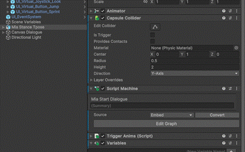
https://gyazo.com/fe39ea86fe78ea995250872e5194ccbc
In Source, select Embed in drop down
This allows use of scene objects
(Graph option only uses prefabs - looked at later)
Be careful - switching will wipe code
Name Script Mia Start Dialogue
Select Edit Graph Button - Script Window tab opens
Right click in Graph window and add: On Mouse Down (for Game Object, not Button), Debug Log, String Literal, and wire as below
https://gyazo.com/8387b05762be58a183d8d3b79d61c6bc